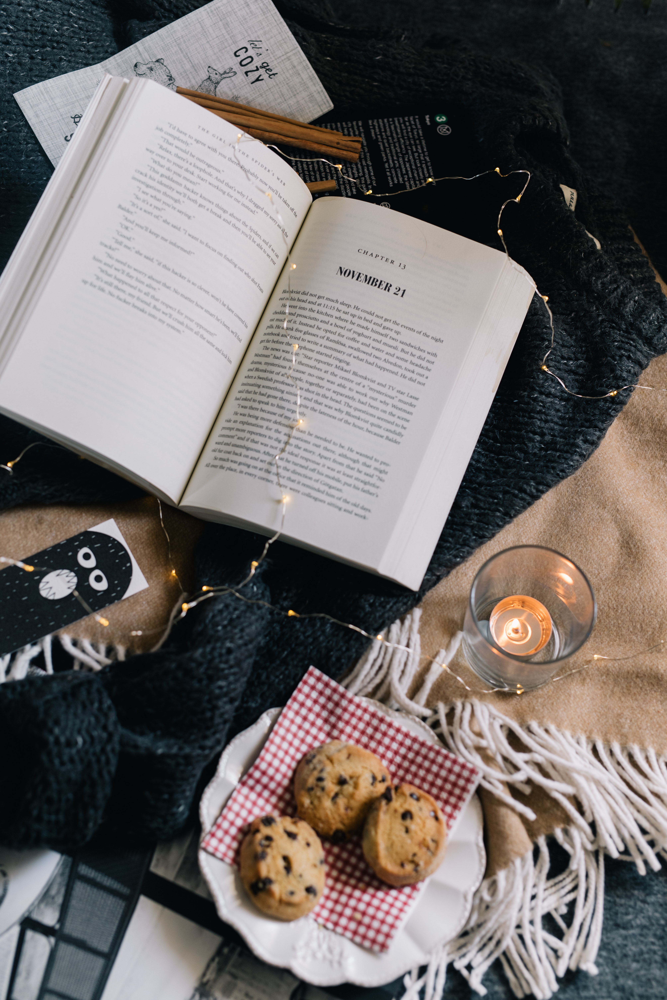

Volume 3

Hola amigos,
Frosty November is already knocking on the doors. Ten months of 2022 have passed like nothing. I cannot believe that a year of hard work, desires, and improvements will end soon. All these distressing workloads to reach our expectations have been draining the youth out of us. Do you not think it is high time we invest time in ourselves? I suggest we need to give a break to this never-ending saga of exploiting our poor souls. Trust me, self-care is a must. Grant a little bit of your precious time to hear, feel, heal, and nurture yourself.
Do things that feed your passion as November brings you the freshness of children's day. Keep in mind that life is not all about growing up. Keep the child inside you alive to taste a life bit sweeter.
Have you ever heard of Mother O Mine by Rudyard Kipling? It portrays the intense connection between a mother and a child. I have realized that a child remains a child for his parents even after graying. The warmth and support our well-wishers provide are incredible.
It is a truth that globalization has made the entire world more competitive, and this competition can be scary too. Assuming that others are better than themselves can lead people to depression. But there are two sides to a coin. Let us see what Bill Gates said.
“Whether it is Google or Apple or free software, we have some fantastic competitors, keeping us on our toes.”
I think you guys got it now. He treats competition as a way to upgrade himself, a tool to make him stronger. Take these into your mind and grab every chance which helps you to improve yourself and makes you the best competitor.
Frosty November is already knocking on the doors. Ten months of 2022 have passed like nothing. I cannot believe that a year of hard work, desires, and improvements will end soon. All these distressing workloads to reach our expectations have been draining the youth out of us. Do you not think it is high time we invest time in ourselves? I suggest we need to give a break to this never-ending saga of exploiting our poor souls. Trust me, self-care is a must. Grant a little bit of your precious time to hear, feel, heal, and nurture yourself.
Do things that feed your passion as November brings you the freshness of children's day. Keep in mind that life is not all about growing up. Keep the child inside you alive to taste a life bit sweeter.
Have you ever heard of Mother O Mine by Rudyard Kipling? It portrays the intense connection between a mother and a child. I have realized that a child remains a child for his parents even after graying. The warmth and support our well-wishers provide are incredible.
It is a truth that globalization has made the entire world more competitive, and this competition can be scary too. Assuming that others are better than themselves can lead people to depression. But there are two sides to a coin. Let us see what Bill Gates said.
“Whether it is Google or Apple or free software, we have some fantastic competitors, keeping us on our toes.”
I think you guys got it now. He treats competition as a way to upgrade himself, a tool to make him stronger. Take these into your mind and grab every chance which helps you to improve yourself and makes you the best competitor.
SCHOLARSHIP
U - Go Scholarship Program is for first year girl undergraduates pursuing teaching, nursing, pharmacy, medicine, engineering, etc. Deadline for application is 30 November 2022.National Scholarship Portal provides you with a vast list of opportunities in the form of scholarships. Applications for all the NSP scholarships will be accepted only till 30 November 2022.
Vidyasaarathi
provides a list of scholarships for UG and PG students. Application deadlines will fall in
the month of November.
INTERNSHIPS
Intel Internship Candidates pursuing Masters in Information Security Computer Science Information Systems Network engineering or any other related field with a BE or B.Tech graduation program are eligible to apply.FELLOWSHIPS
Amelia Earhart Fellowshipprovided by Zonta International, is awarded annually to up to 30 women pursuing Ph.D./doctoral degrees in aerospace engineering and space sciences. Apply now to get upto US$10,000 Fellowship.Summer Research Fellowship Program 2023 is for UG and PG students. Application deadline is 15 November 2022.